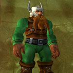
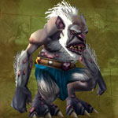
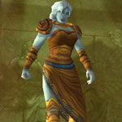
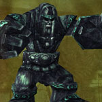
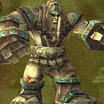
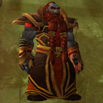
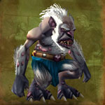
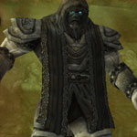

You can find the Uldaman dungeon within Badlands, Eastern Kingdoms.
The coordinates are (42.0,11.5)


Route:
Map 1Map 2


Bosses:
1. The Lost Dwarves2. Revelosh3. Ironaya4. Obsidian Sentinel5. Ancient Stone Keeper6. Galgann Firehammer7. Grimlok8. Archaedas

Quick Boss Tactics:/i Baelog: He will use Strike with his sword when close & use Shoot when ranged. Eric: He will use Rushing Charge, runs at player to increase his next attack. Olaf: Uses Shield Slam stunning his target & inflicts physical damage.

Quick Boss Tactics:/i Uses Chain Lightning. Chain Lightning & Lightning Bolt are interruptible.

Quick Boss Tactics:/i All her attacks deal physical damage. War Stomp stuns players nearby. Current target will get pushed back with Knock Away.

Quick Boss Tactics:/i When casts Splintered Obisian boss reduces damage done by 60% to summon Obsidian Shard. The shards use reflective shields giving them 20% chance to reflect next spell cast on them.

Quick Boss Tactics:/i Casts Sand Storms on a player that move around the room, causing damage & reduces movement speed of anyone nearby.

Quick Boss Tactics:/i Uses lots of fire spells. The Shadowforge guards attacks are interruptible.

Quick Boss Tactics:/i Most spells on this boss are interruptible. Uses Chain Bolt hitting other nearby players. Fights with his pet Basilisk.

Quick Boss Tactics:/i This boss has addition mobs to aid him, first awakens Earthen Dwarfs. When boss reaches 66% awakens Earthern Guardians (deal physical damage). When boss reaches 33% awakens Vault Warders (use stuns).